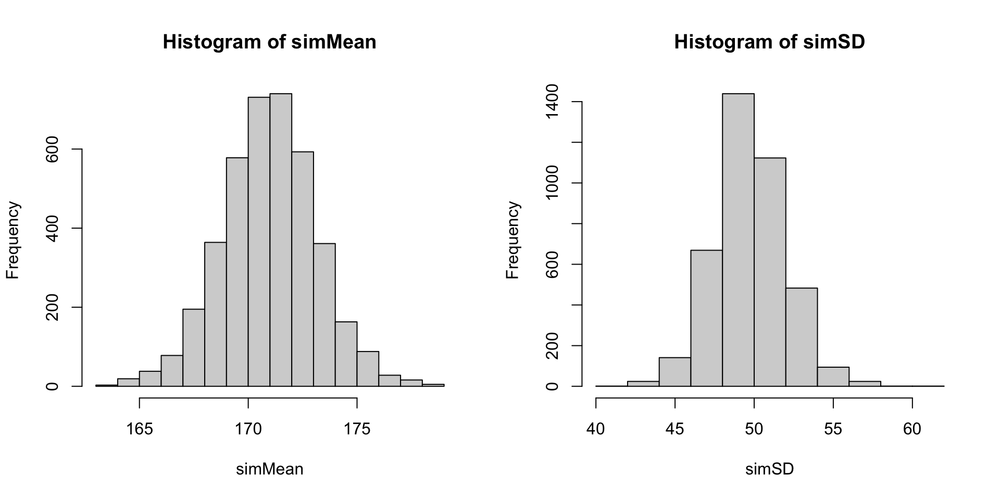
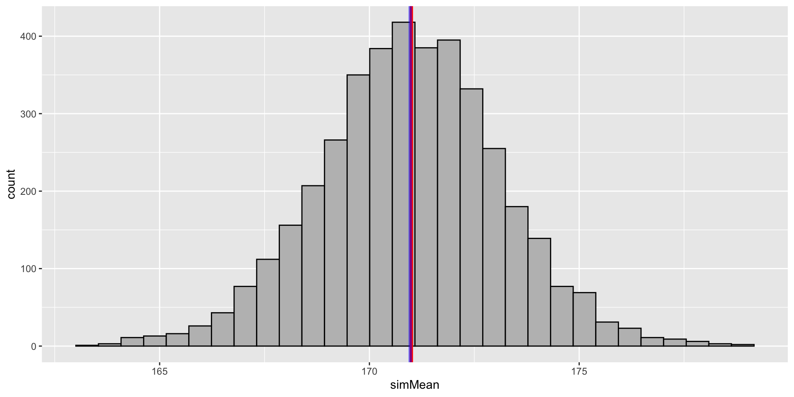
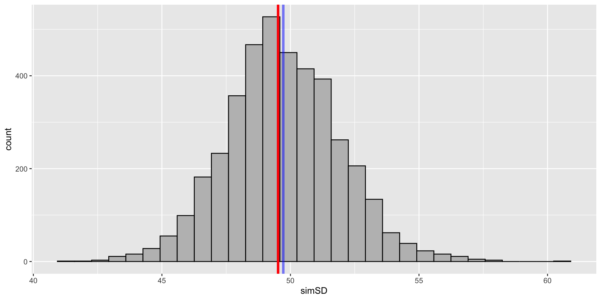

Select parameters from a single (sampling) iteration of the Markov Chain
Using the selected parameters and the model to simulate a data set with the sample size (with same number of observations/variables)
From the simulated data set, calculate selected summary statistics (e.g., mean, sd)
Repeat steps 1-3 for a fixed number of iterations (perhaps across the whole chain)
When done, compare position of observed summary statistics to that of the distribution of summary statistics from simulated data sets (predictive distribution)
3.2 Step 1: Assemble the posterior draws
For our linear model, let’s denote our observed dependent variable as Y
Note that independent variables are not modeled (not explained by statistical formula), so we cannot examine them.
First, let’s assemble the posterior draws (1000 \times 4 \times 7):
posteriorSample=fit_full_new$draws(variables =c('beta','sigma'), format ='draws_matrix')posteriorSample
We can repeat step 2-4 for a set number of samples
Optionally, we can choose to use up all iterations we have for Markov Chains (I = 4000) in practice
I=nrow(posteriorSample)## create empty simSD and simMean as placeholderssimSD=simMean=rep(NA, I)for(iin1:I){# betabetaVector=matrix(posteriorSample[i, 1:6], ncol =1)# sigmasigma=posteriorSample[i, 7]# XsimY=rnorm(n =N, mean =X%*%betaVector, sd =sigma)simMean[i]=mean(simY)simSD[i]=sd(simY)}par(mfrow =1:2)hist(simMean)hist(simSD)

3.7 Compare to the observed mean
We can now compare our observed mean and standard deviation with that of the sample values.
Blue line: the average value of predicted WeightLB
Red line: the observed mean value of WeightLB
The PDF of predictive values of summary statistics of WeightLB is called posterior predictive distribution
PPMC can be checked using visual inspection:
library(ggplot2)ppp<-data.frame( simMean =simMean, simSD =simSD)ggplot(ppp)+geom_histogram(aes(x =simMean), fill ="grey", col ="black")+geom_vline(xintercept =mean(dat$WeightLB), col ="red", size =1.4)+# red line: location of mean of predicted WeightLB by modelgeom_vline(xintercept =mean(simMean), col ="blue", size =1.4, alpha =0.5)# blue line: location of mean of WeightLB

3.8 Compare to the observed SD
Similarly, let’s compare SD to the posterior predictive distribution of SD of WeightLB
the observed SD is located as the center of posterior predictive distribution (PPD)
the average mean of PPD is slightly higher than the observed SD
ggplot(ppp)+geom_histogram(aes(x =simSD), fill ="grey", col ="black")+geom_vline(xintercept =sd(dat$WeightLB), col ="red", size =1.4)+# red line: location of mean of predicted WeightLB by modelgeom_vline(xintercept =mean(simSD), col ="blue", size =1.4, alpha =0.5)# blue line: location of mean of WeightLB

4 PPMC Characteristics
PPMC methods are very useful
They provide a visual way to determine if the model fits the observed data
They are the main method of assessing absolute fit in Bayesian models
Absolute fit assesses if a model fits the data instead of comparing to another model
But, there are some drawbacks to PPMC methods
Almost any statistic can be used
Some are better than others (mean and SD of outcomes are nice choices for linear regression)
No standard determining how much misfit is too much
May be overwhelming to compute depending on your model
5 Posterior Predictive P-values
We can summarize the PPMC using a type of “p-value”
Personally, I don’t like the name “p-value”, sounds like we are trying to justify our results using significance testing
Different from the frequentist “p-value” (if the null hypothesis is true, the probability of the observed data existing)
The PPP-value: the proportion of times the statistic from the simulated data exceeds that of the observed data
Useful to determine how far off a statistic is from its posterior predictive distribution
If these p-values were:
near 0 or 1, indicating your model is far off your data
near .5, indicating your model fits your data in terms of the statistics you examined
Posterior predictive distribution for mean of weight by chains
8 Relative Model Fit
Relative model fit: used to compare 2 or more competing models in terms of their mode fit. Sometime, it is also called model selection.
In non-Bayesian models, Information Criteria are often used to make comparisons
AIC, BIC, DIC etc.
Typically IC is a function of log-likelihood and penality
The model with the lowest IC is the model that fits best
Bayesian model fit is similar
Uses an index value
The model with the lowest index is the model that fits best
Recent advances in Bayesian model fit use indices that are tied to make cross-validation predictions (inspired by machine learning):
Fit model leaving one observation out (LOO)
Calculate statistics related to prediction (for instance, log-likelihood of that observation conditional on model parameters)
Do for all observations
New Bayesian indices try to mirror these leave-one-out predictions (but approximate these due to time constraints)
9 Deviance Information Indices
When late 1990s and early 2000s, the Deviance Information Criterion was popular for relative Bayesian model fit comparisons. It is proved not as good as LOO or WAIC. But let’s have a look at:
\text{DIC} = p_D + \overline{D(\theta)}
where p_D is the estimated number of parameters as follows:
p_D = \overline{D(\theta)} - D(\bar\theta)and where
10 Introduction: Approximation to Leave-one-out
Big picture:
This comparative fit indices include WAIC, LOO, Pareto Smoothed Important Sampling (PSIS) via Stan’s LOO package
WAIC/LOO can be used for model comparison with lowest value suggesting better model fit
Different from AIC/BIC/DIC, LOO via PSIS attempts to “approximate” the process of leave-one-out cross-validation (LOO-CV) using a sampling based-approach
Gives a finite-sample approximation
Implemented in Stan
Can quickly compare models
Gives warnings when it may be less reliable to use
11 WAIC in Stan
12 LOO: Leave-one-out in Stan
Using loo package, Efficient approximate leave-one-out cross-validation (LOO-CV)
elpd_loo is the expected log pointwise predictive density for LOO (recall that posterior predictive distribution has some uncertainty around the mean value…)
p_loo is the LOO calculation of number of model parameters (a penalty to the likelihood for more parameters)
looic is the LOO index used for model comparisons — lowest value suggests best fitting -2elpd_loo
Vehtari, Aki, Andrew Gelman, and Jonah Gabry. 2016. “Practical Bayesian Model Evaluation Using Leave-One-Out Cross-Validation and WAIC.”Statistics and Computing 27 (5): 1413–32. https://doi.org/10.1007/s11222-016-9696-4.